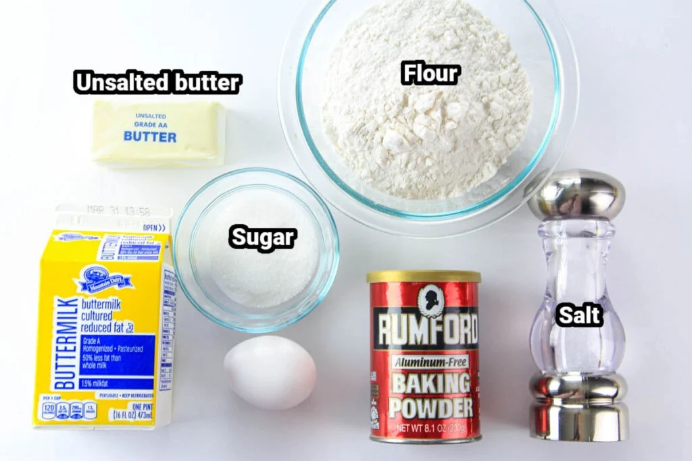

How to Make Pancakes
Pancakes are a beloved breakfast dish cherished for their fluffy texture. These flat, round cakes are made from a simple batter of flour, eggs, milk and baking powder cooked on a hot pan until golden brown. Pancakes are often served with toppings like maple syrup or butter and enjoyed in stacks. Their ease of preparation and universal appeal make them a comforting, crowd-pleasing dish relished worldwide.
Recipe Information
Preparation time: 5 minutes
Cooking time: 15 minutes
Number of servings: 8
Difficulty level: Beginner
Ingredients

- 1½ cups all-purpose flour
- 3½ teaspoons baking powder
- 1 tablespoon white sugar
- ¼ teaspoon salt to taste
- 1¼ cups milk
- 3 tablespoons melted butter
- 1 large egg
Instructions
- Gather all ingredients
- Mix dry ingredients-sift flour, baking powder, sugar and salt together in a large bowl
- Mix wet ingredients-whisk together milk, egg and melted butter in a seperate bowl
- Pour wet ingredients into dry ingredients and stir until smooth
- Heat a lightly oiled pan over medium-high heat. Pour or scoop the batter onto the pan, using approximately 1/4 cup for each pancake
- Cook until bubbles form and the edges are dry, about 2 to 3 minutes. Flip and cook until brown on the other side. Repeat with remaining batter
- Serve warm with maple syrup, whipped cream, fruits or any topping of your choice

Tips
For extra fluffiness, let the batter rest for 5-10 minutes before cooking. If the batter seems too thick, add a splash more milk, if too thin, add a tablespoon of flour. Also, mix in blueberries, chocolate chips or bananas to the batter for variety. Enjoy!